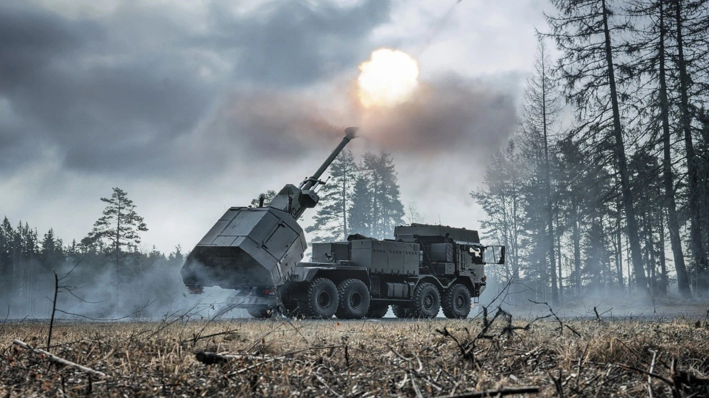
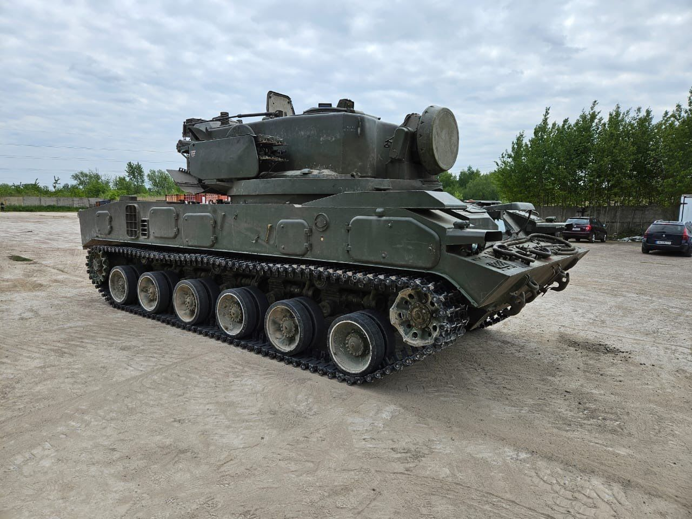
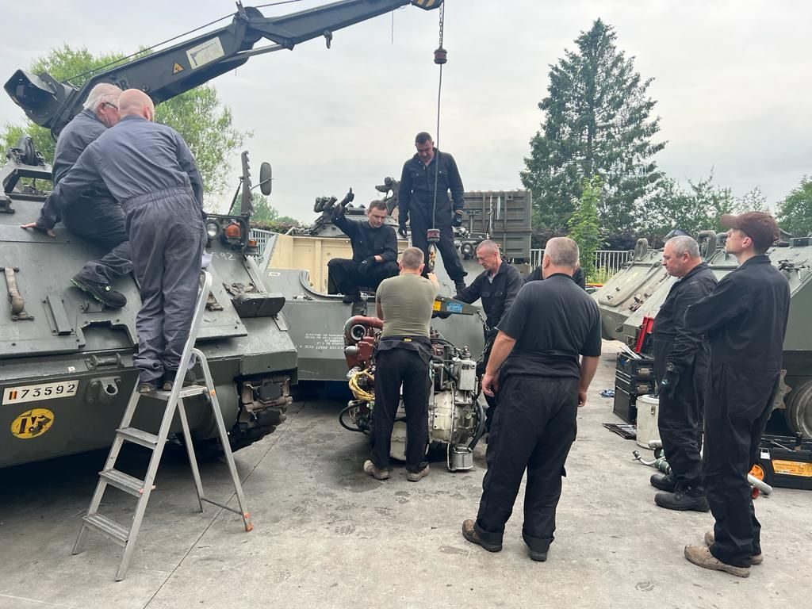
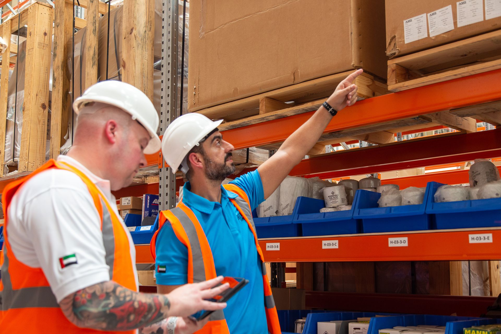
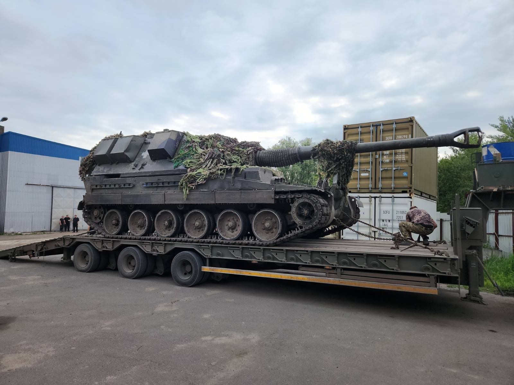
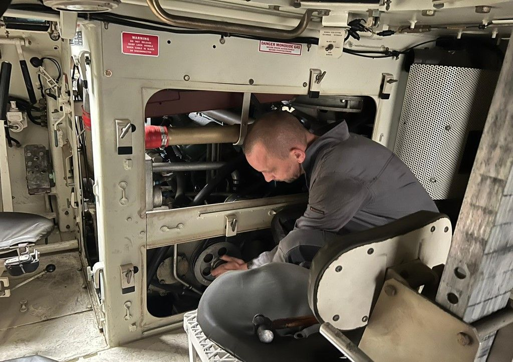

Our role
We absorb operational complexity so fleets stay ready.




Defence in-service support · Established 2001
We manage in-service complexity and protect operational capability, so defence platforms keep performing as intended, wherever they operate.
Who we are
AMS delivers in-service support for defence platforms operating in complex and demanding environments worldwide.
Established in 2001, we work as an extension of OEM capability – maintaining configuration control, sustaining platform performance, and absorbing operational risk in locations where direct OEM presence is difficult or impractical.
We exist to ensure platforms continue to perform as intended – even when circumstances are challenging.
We absorb operational complexity so fleets stay ready.
A trusted in-service presence between OEMs, governments and operators.
Capability preserved, readiness protected, risk controlled.

What we do
And we do it day in, day out for OEMs, government customers and operational users.
Our role is to absorb operational friction, enforce discipline and stabilise performance over time.
Distance, climate, infrastructure limitations, security constraints and operational tempo all create friction. AMS removes that friction.
We maintain readiness. AMS sits between OEMs, government customers and operational users. We don't replace any of these actors. We make the system work when conditions are difficult.
We provide the disciplined, consistent, standards-compliant support that keeps platforms mission-ready – wherever they operate.
Core services
AMS delivers integrated in-service support across four core capability areas.
Our services work independently or together as a system. Our integrated approach with your methodology and platforms ensures consistency, control and continuity across the in-service lifecycle.
Each capability is designed to reduce complexity, enforce discipline and protect platform performance over time.

Disciplined sustainment that keeps land, artillery and maritime fleets available, from battle damage to full rebuild. We bring the work to where platforms are deployed and hold every job to OEM standard, so performance stays stable over time.
A trusted expert presence on customer sites and in theatre. Our FSRs resolve issues where they arise, uphold OEM standards and pass on the knowledge your teams need to keep platforms available after we leave.

Capability that stays with your people. Built with major defence manufacturers, our programmes take operators and maintainers from new-equipment training to depot-level skills, reducing dependency on outside support.
Stable supply when environments aren't. We source from 1,100+ vetted suppliers, hold stock in country and handle due diligence, licensing and end-user certification, so platforms don't wait for parts.
Why AMS
We operate where conditions are hardest and standards matter most.
In complex operational environments, sustainment is judged by whether capability is preserved, readiness is protected, and risk is controlled over time. AMS exists to deliver exactly that.
We measure success by readiness and availability – not activity volume.
We enforce standards, maintain configuration and prevent drift.
We reduce operational friction so customers and OEMs can focus elsewhere.
We absorb operational, reputational and legal exposure in difficult environments.
We operate to OEM standards, protecting platform integrity and IP.
We deliver where conditions are difficult – not just where they are convenient.
Who we work with
OEMs need partners who protect platform reputation, extend control and reduce exposure in complex environments.
“We are your in-service partner in complex environments – protecting platform performance, reducing risk and extending your operational control without you needing to be there.”
AMS doesn't compete with OEMs. We extend their control where direct presence isn't practical.
Government customers need confidence that platforms will be ready when required – without carrying unnecessary risk or complexity.
“We help government customers sustain operational capability over time – with discipline, transparency, and proven performance in demanding environments.”
Track record
Founded to provide expeditionary fleet sustainment services to UN and NATO forces during the Balkans conflict.
Team deployed to support tsunami relief and rescue work, servicing rescue equipment.
First contract with the US Government, providing an MRO solution for Afghan National Police vehicles.
Follow-on award from the US Government to service more than 8,000 ANP assets.
30,000 assets under service, and over 30 service facilities constructed nationwide.
MRO services for the UN mission, maintaining more than 2,000 peacekeeping assets nationwide.
Footprint doubled to all 34 provinces, spanning training, supply chain, base operations and MRO.
Technical experts deployed for the Forward on Support Programme, delivering MRO for UAE Government MRAP vehicles.
FSR team providing warranty support across the Algerian military's MAXXPRO MRAP fleet.
AMS base camp established, providing secure accommodation and life support services to UN and EU partners.
USAID contract to deliver a comprehensive Fleet Management System for the Ministry of Health.
As a trusted partner of Navistar Defense, FSRs deployed to deliver national warranty support for MAXXPRO MRAP vehicles.
Operations commenced providing management services across 18 UN field locations.
UK MOD award for a specialised MRO programme supporting Ukrainian MOD air defence systems; FSRs deployed to Belgium for M113 technical support.
Where we operate
AMS delivers in-service support across two operating modes.
Providing structured, long-term sustainment within defined regions and facilities.
Deploying specialist teams into overseas theatres to inspect, maintain and sustain platforms where they operate.
Standards
Three certified management systems, independently audited.
Quality Management Systems
Environmental Management Systems
Occupational Health & Safety Management
Next step
AMS is the right choice to support your in-service requirements.
Remove complexity. Protect readiness.